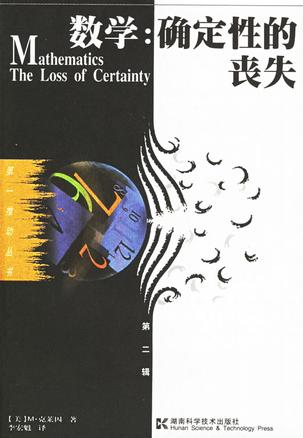

绝大多数有知识的人今天仍然认为数学是关于物质世界的不可动摇的知识体系，数学推理是准确无误的。这本专著驳斥了这种神话。作者M·克莱因指出，今天，普遍接受的数学概念已不复存在，事实上，有许多相互矛盾的数学概念；但是，在描述和研究自然与社会现象时，数学的有效性却在持续扩大。这是为什么？
全书在非专业层次上探讨数学尊严的兴衰，详细介绍了数学真理的起源、数学真理的繁荣、科学的数学化、数学向何处去等内容。
该书籍由网友制作上传，版权归原作者所有，仅供学习交流之用，请在下载后24小时内自行删除！
--epub掌上书苑(http://www.cnepub.com)